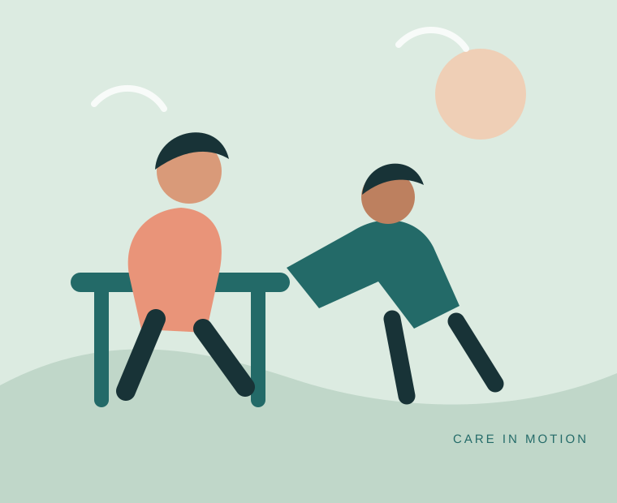

Rehabilitation with
respect and purpose.
Rehabilitation Foundation and Research Centre is here to support people with disabilities and musculoskeletal conditions, their families, and the professionals who care for them.

OUR APPROACH
Every person deserves to be heard.
Our work is grounded in dignity, practical support and the belief that progress looks different for everyone. We connect rehabilitation services with useful equipment and clear information.
We are building this online space to make it easier for families and professionals to explore what RFRC offers and reach our team.
Connect with RFRCWHAT GUIDES US
Care should feel clear.
Respect, thoughtful guidance and a commitment to helping people take their next step.